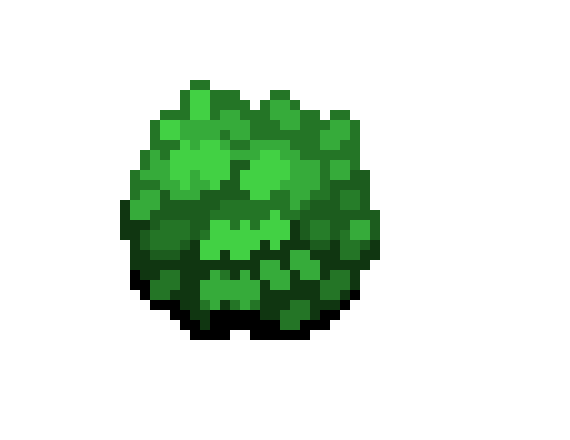

Här ska det vara en
som man kan ladda upp content med.
Sortering och Rating
Sorteringsfunktion efter Datum, Rating och uppladdare.
Ratingsystem i form av buskar, exempel den här bilden fick 4 av 5 buskar
Inloggningen
En inloggningsfunktion ska komma på plats så att man kan söka efter content från en specifik användare om så önskas,
gissar mig till att jag kommer behöva något slags databas för att lyckas med detta.
Sökfunktionen
Sökfunktionen ska man kunna välja om man vill söka på bilder, taggar eller videos
Färgerna valdes för kontrastens skull, 9:1 :D och bordersen e för att jag ska kunna hålla reda på vad som e vart under designfasen.
sidan har väl egentligen inget direkt syfte, bara att öva på olika saker och ting.
